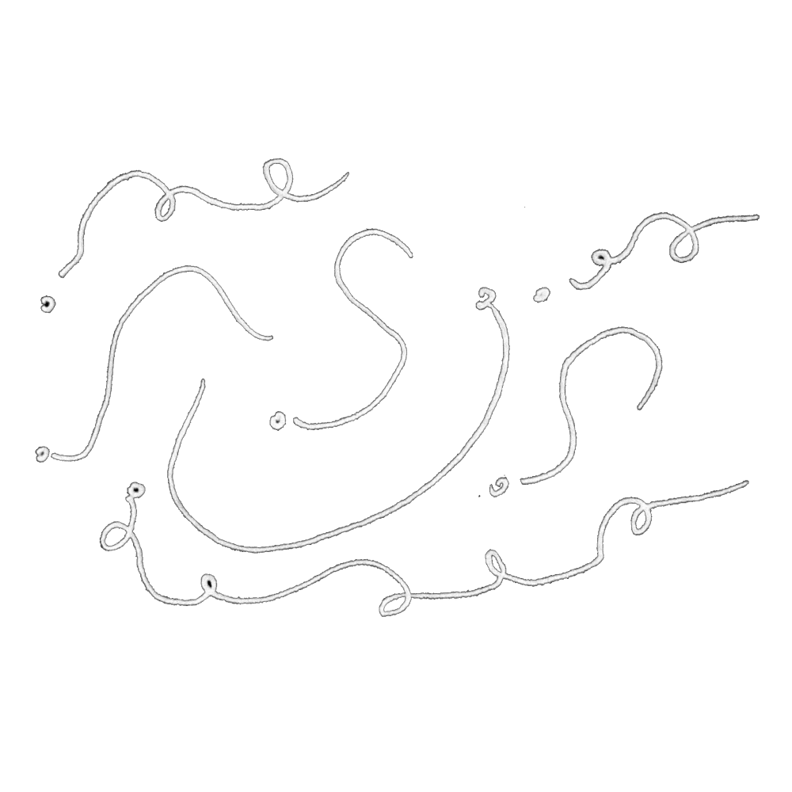
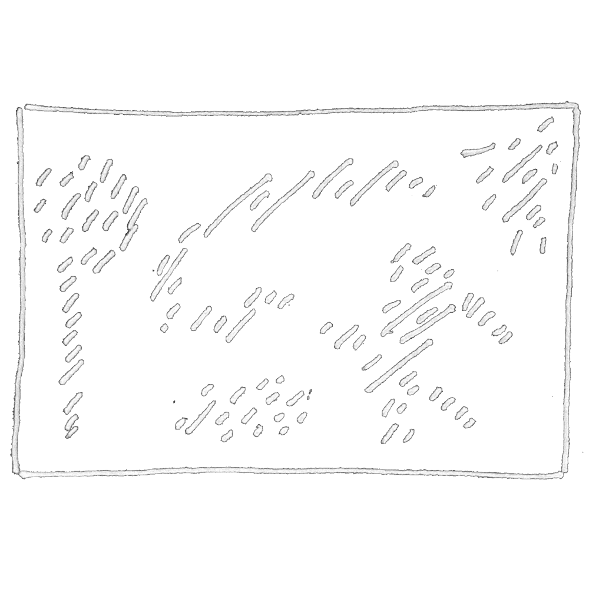
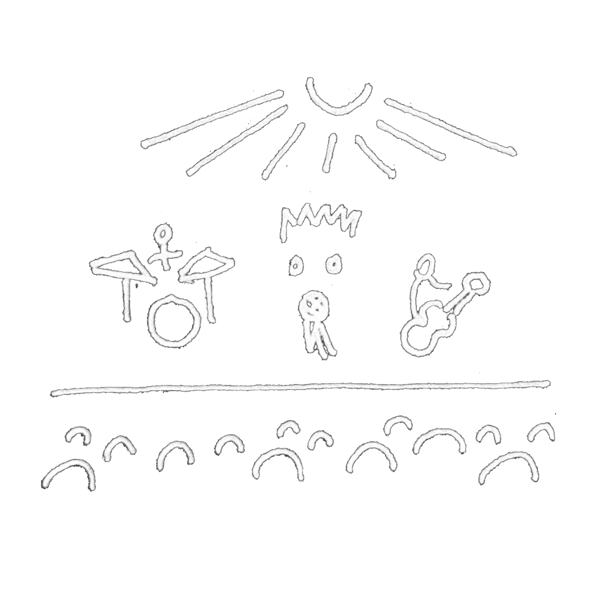
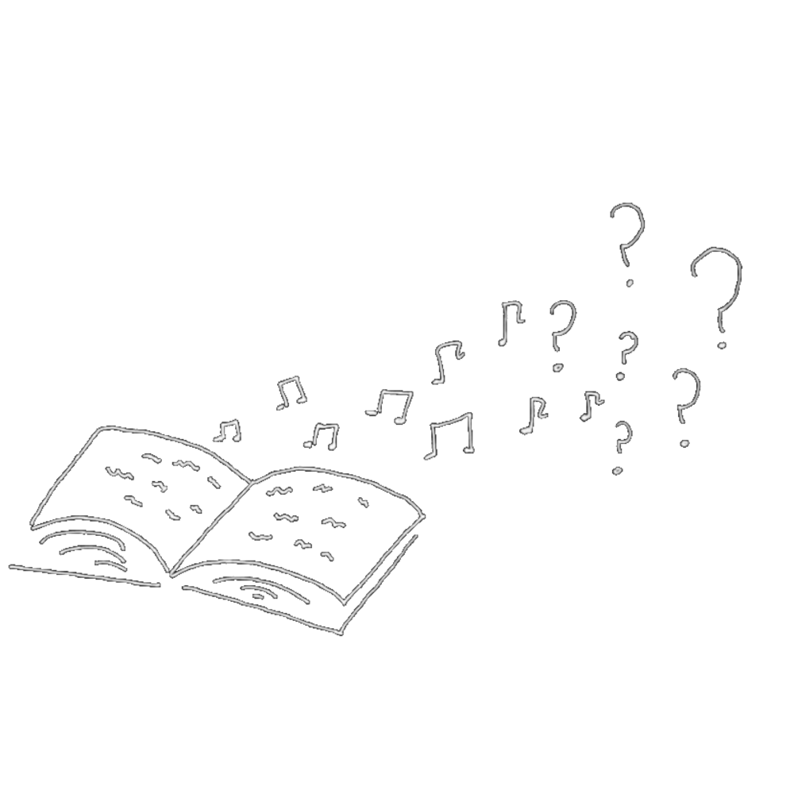

this is a picture of me
in front of a paper hanging
which you may have not noticed at all
had you not read this. in fact
you may not have noticed me at all were it not for this
whole thing
which covers me, in a sense—
but is much more "me" than me:
in fact it may live on (if the subscription is maintained)
in a much more permanent way than me
by effacing me;
so for the purposes of recognition
and of (ironically) becoming more of a "Being" (if that's
even only in the pictures in others heads
(and of course the trackers))
here's what i do
in the process of becoming a ghost
latest work

place elegy
ghosts / sound-poem

six poems
ekphrasis / isolation / freedom [@ the plum creek review]

what i've done
it's what i've done. you'll get it [+ the self-prescribing doctors union]

language, music, and parasitic mysteries
comparing boulez & mallarmé with michel serres' "le parasite" [@ oberlin research symposium]
latest thoughts


contact
- i teach singing, musicianship, composition, and writing;
and if you would like to collaborate or dialogue i would
cross the void for you
here's my email so send me a thing if you're not a robot
(though we are all cyborgs):
j r e i n i e r (@) o b e r l i n (.) e d u